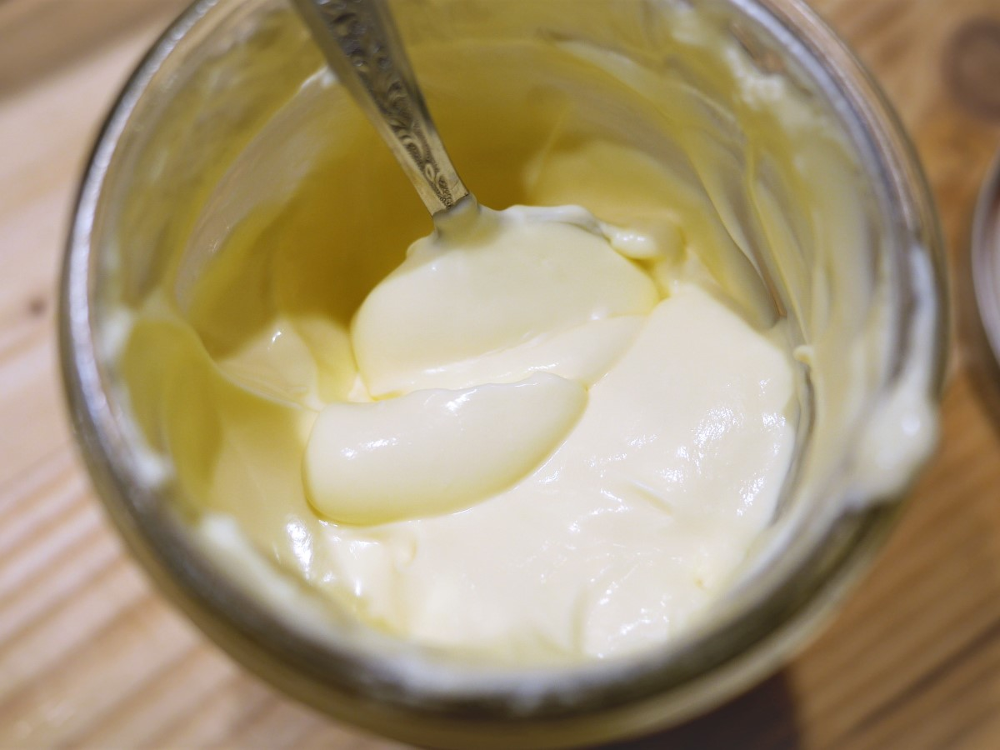

Crème Fraîche Maison

Ingrédients
- 1 tasse (240 grammes) de crème épaisse
- 1 cuillère à soupe (15 grammes) de babeurre entier (cultured buttermilk)
Instructions
- Dans un petit bol, fouetter ensemble la crème et le babeurre.
- Couvrir légèrement le bol avec du film plastique ou un torchon. Laisser reposer à température ambiante pendant 16 à 24 heures.
- Une fois que la crème a bien épaissi, placez-la au réfrigérateur pour la laisser prendre complètement, environ 4 heures.
- La Crème Fraîche Maison se conserve au réfrigérateur dans un contenant hermétique pendant jusqu'à 2 semaines.
Home